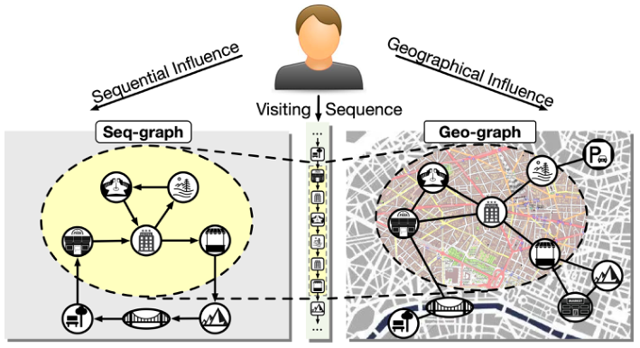
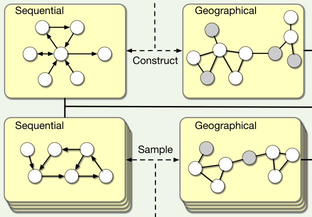

Kernel-based Substructure Exploration for Next POI Recommendation (基于核子结构探索的下一兴趣点推荐)
- 会议/期刊: IEEE ICDM 2022
- 作者与机构: Wei Ju, Yifang Qin, Ziyue Qiao, Xiao Luo, Yifan Wang, Yanjie Fu, Ming Zhang（北京大学 / 香港科技大学(广州) / 中佛罗里达大学）
- 推荐链路定位: 精排（下一 POI 的 CTR 预估）
- 研究方向: 时空轨迹与 POI 本地生活推荐 / 图神经网络与知识图谱推荐
- 论文原文: https://arxiv.org/abs/2210.03969v1
- 开源代码: https://github.com/Fang6ang/KBGNN
TL;DR (1分钟核心速览)
现有下一 POI 推荐几乎都在 RNN/Attention 上做序列建模，既无法显式刻画 POI 之间拓扑地理邻近性，也抓不住用户轨迹中反复出现的高阶序列子结构（如地图上的“三角形/四边形”常规路线）。本文提出 KBGNN：地理图上做带距离衰减核的消息传递，序列图上用可微随机游走图核 + 可训练图滤波器抽取高阶子结构，再用 KL 分布一致性学习让两模块互为监督。在 Foursquare Tokyo/NYC 上，AUC 分别比最优基线提升 3.3%/4.5%，Logloss 下降 23%/24%。
Background & Motivation (背景与核心矛盾)
- 主流范式: DeepMove/LSTPM/GeoIE 等以 RNN、geo-dilated LSTM 或注意力为主干，把地理信息当作附加的空间特征拼进序列编码器。
- 前人局限 ①: 地理位置只按物理距离或相邻关系硬编码为特征，无法刻画 POI 网络中多跳拓扑地理影响（距离衰减在网络上的传播）。
- 前人局限 ②: RNN 的隐状态只表达“路径依赖”，难以显式对齐用户轨迹中的高阶子图模式（轨迹本身构成 loop / 多边形 routine），而这类子结构恰是个性化偏好的强信号。
- 核心洞察 (Key Insight): 一次观测到的签到同时被“历史序列邻居”和“附近 POI”驱动（图 1），两者是互补而非替代关系；因此应当建两张图、用两种异构算子分别编码，再对齐语义空间。
- 本文切入点: 双图双模块 + 软一致性蒸馏，把拓扑地理与高阶序列子结构协同进同一个 CTR 预测器。

Method (核心方法设计)
1. 整体框架 (Overall Architecture)
输入用户 \(u\)的签到序列\(s_u\)，同时构建两张图：地理图\(G_g\)（POI 物理距离小于\(\Delta_d=0.5\)km 建边，边权为公里距离）与用户感知序列图\(G_{s,u}\)（相邻签到建边）。地理模块用消息传递 GNN 编码\(G_g\)，经多头自注意力聚合得到语义地理表示\(e_{g,u}\)；序列模块用图核网络将\(G_{s,u}\)与一组可训练图滤波器做随机游走核比对，展平后得到语义序列表示\(e_{s,u}\)。两模块除共享监督的 CTR 损失外，还在记忆库锚点序列上计算相似度分布并用对称 KL 对齐（\(e_{g,u}\leftrightarrow e_{s,u}\)），最后拼接目标 POI 表示\(h_t\) 送入两层 MLP + Sigmoid 输出点击概率。

flowchart TD
A["用户签到序列 s_u"] --> B["地理图 G_g：距离阈值 0.5km 建边"]
A --> C["序列图 G_s,u：相邻签到建边"]
B --> D["消息传递 GNN + 距离核 w(d)=e^(-d²)"]
C --> E["可微随机游走图核 + 可训练图滤波器"]
D --> F["语义地理表示 e_g,u"]
E --> G["语义序列表示 e_s,u"]
F --> H["对称 KL 一致性损失 L_con"]
G --> H
F --> I["MLP + Sigmoid → ŷ"]
G --> I
I --> J["CTR 预测"]2. 关键设计拆解 (Key Designs)
-
距离核消息传递的地理模块（把物理距离变成传播衰减）：痛点是把地理当静态特征无法多跳传播。本文在 GCN 归一化边上再乘一个高斯型距离核：\(m_{j\leftarrow i}^{(l)}=\frac{1}{\sqrt{|\mathcal{N}_i||\mathcal{N}_j|}}w(d_{ij})\mathbf{W}^{(l)}h_i^{(l-1)}\)，其中\(w(d_{ij})=e^{-d_{ij}^{2}}\)。直觉：距离越远信息流越被抑制，于是 2–3 跳邻域自然形成“商圈级”语义团簇，而非全城平摊。
-
可微随机游走图核的序列模块（用图滤波器当“子结构探测器”）：痛点在于 RNN 隐状态无法显式表达循环 routine。本文把 \(G_{s,u}\)与\(N\)个带可训练邻接矩阵\(A_i\in\mathbb{R}^{n_i\times n_i}\)的图滤波器\(G'_i\)做直积图上的\(p\)步游走核：\(k^{(p)}(G,G')=\mathbf{e}^{\top}A_{\times}^{p}\mathbf{e}\)，构造\(H_{ij}=k^{(j-1)}(G_{s,u},G'_i)\)后展平得\(e_{s,u}\)。直觉：公共游走计数等价于“子图模式匹配次数”，滤波器即学到的 prototypical routine（实验可视化出五边形、星形结构）。
-
训练目标、负采样与推理开销：分布一致性用温度 0.5 的余弦相似度 \(\Phi(\cdot,\cdot)=\exp(\cos(\cdot,\cdot)/\tau)\)构造\(p_{g,u}^{m}=\frac{\Phi(e_{g,u},e_{g,u_m})}{\sum_{m'}\Phi(e_{g,u},e_{g,u_{m'}})}\)，损失\(\mathcal{L}_{con}=\frac{1}{|\mathcal{U}|}\sum_{u}\frac{1}{2}\left[D(p_{s,u}\|p_{g,u})+D(p_{g,u}\|p_{s,u})\right]\)；总目标\(\mathcal{L}=\mathcal{L}_{rec}+\beta\mathcal{L}_{con}\)，\(\beta=0.01\)，\(\mathcal{L}_{rec}\) 为 BCE。锚点序列由队列式 memory bank 维护（仅存最近若干迭代的锚点），避免为全量序列同时编码；在线推理只需前向双模块 + MLP，无需负采样与全库排序。
Experimental Setup & Evaluation Protocol (实验设置与评估协议)
- 数据集与预处理:
| 数据集 | #Users | #Items(POI) | #Interactions | 稀疏度/密度 | 特征/场景说明 |
|---|---|---|---|---|---|
| Foursquare Tokyo | 2,293 | 61,858 | 573,703 | 密度 ≈ 0.40% | 平均序列长 250.2，经纬度 + 时间戳 |
| Foursquare NYC | 1,083 | 38,333 | 227,428 | 密度 ≈ 0.55% | 平均序列长 210.0，同上 |
- 数据划分与防穿越 (Splitting Strategy): 严格按时间戳排序，每个用户最后一条签到留作评估集（Leave-Last-Out），其余为训练集；评估集等分为 test / validation 两份，属时间序切分，无未来信息泄漏。
- 排名评测协议 (Ranking Protocol): 本文并非 Full-Ranking 排序，而是 location-based CTR 二分类：对给定 \((u,v_t)\) 预测点击概率，用 AUC ↑ 与 Logloss ↓ 评价；论文未报告采样负例比例，属于“目标 POI 正样本 + 隐式负样本”的 CTR 框架，这一点弱于全库排序评估的严格性。
- 对比基线与超参设置: 三类基线——序列 CTR（DIN、DIEN）、GNN 推荐（SR-GNN、NGCF、LightGCN）、POI 专用（GeoIE、LSTPM、GSTN）。所有模型隐层维度统一 \(d=64\)，KBGNN 取\(\beta=0.01\)、\(\Delta_d=0.5\) km、GNN 2 层、游走 3–4 步；结果为 3 次随机初始化的均值。
Key Experimental Results (实验关键数据)
1. 主实验对比 (Main Results)
| Model | Tokyo AUC↑ | Tokyo Logloss↓ | NYC AUC↑ | NYC Logloss↓ |
|---|---|---|---|---|
| DIN | 0.8623 | 0.4174 | 0.8015 | 0.5203 |
| DIEN | 0.8643 | 0.4544 | 0.8062 | 0.5582 |
| SR-GNN | 0.8867 | 0.4481 | 0.8491 | 0.5262 |
| NGCF | 0.8899 | 0.4436 | 0.8461 | 0.4788 |
| LightGCN | 0.8998 | 0.4348 | 0.8729 | 0.4815 |
| GeoIE | 0.9083 | 0.4203 | 0.8769 | 0.4810 |
| LSTPM | 0.8745 | 0.4374 | 0.8568 | 0.4821 |
| GSTN | 0.8906 | 0.4312 | 0.8521 | 0.5323 |
| KBGNN (Ours) | 0.9387 | 0.3147 | 0.9189 | 0.3620 |
| Improv.% | +3.35% | −25.1% | +4.79% | −24.8% |
（Improv. 相对最强基线 GeoIE；Logloss 相对最优基线计算。）
2. 消融实验 (Ablation Study)
| 变体 | Tokyo AUC | NYC AUC | 结论 |
|---|---|---|---|
| w/o Seq-graph（去序列模块与 \(\mathcal{L}_{con}\)） | 明显下降（约 0.92 量级） | 明显下降（约 0.89 量级） | 高阶序列子结构有独立贡献 |
| w/o Geo-graph（去地理模块与 \(\mathcal{L}_{con}\)） | 降幅更大（约 0.90 量级） | 降幅更大（约 0.87 量级） | 地理拓扑是主导因素 |
| \(\mathcal{L}_{con}\) 换 InfoNCE | 低于完整模型 | 低于完整模型 | 硬对齐不如软分布对齐 |
| \(\mathcal{L}_{con}\) 换 MSE | 低于完整模型 | 低于完整模型 | 表征级回归丢结构信息 |
| w/o \(\mathcal{L}_{con}\) | 最低 | 最低 | 双模块知识通信不可或缺 |
| KBGNN 完整 | 0.9387 | 0.9189 | — |
（消融精确数值原文仅以柱状图 Fig. 4 / Fig. 7 给出，上表为按图读出的量级与趋势。）
3. 关键实验发现 (Key Findings)
- 地理模块贡献 > 序列模块：移除地理图的性能跌幅始终大于移除序列图，说明“下一站去哪”首先被空间可达性约束；这与冷启动实验中地理类方法（GeoIE、LSTPM、KBGNN）在 20%–40% 稀疏训练集上优势更明显相互印证。
- 软一致性优于硬对比：把 \(\mathcal{L}_{con}\)换成 InfoNCE/MSE 均掉点，而完全不使用一致性损失降幅最大，表明两模块嵌入空间本就异构，用 KL 对齐“相似度分布”而非对齐“向量本身”才是正确的蒸馏粒度；\(\beta\)扫描显示\(10^{-2}\)附近最优，\(\beta>10^{-1}\) 会压过监督信号。
- 超参存在明显拐点：GNN 层数从 0（退化为纯注意力）增至 2 时 AUC 上升、3 层开始过平滑回落；随机游走步数在 3–4 步最优，过长游走引入噪声子结构，说明“高阶”并非越高越好。
Highlights & Limitations (亮点、对比与审稿批判)
- 与代表作对比 (vs. Prior Work): 相比 LSTPM 用 geo-dilated LSTM 隐式吸收空间信息，KBGNN 首次把地理影响做成图上的多跳衰减传播；相比 LightGCN 只做协同二部图传播，它额外引入图核这一非参数子结构匹配算子；相比同样建图的 GSTN，其差异在于用一致性学习而非单一监督同时驱动两张图。
- 可迁移亮点: (i) 用 \(e^{-d^2}\) 距离核调制 GCN 边权，可低成本移植到任何带坐标的推荐（本地生活、外卖、打车）；(ii) “双视图相似度分布 KL 对齐”比 InfoNCE 更容忍异构嵌入空间，适合召回/精排双塔或内容/协同双路融合场景。
- 审稿级局限批判: (i) 图核需对每个用户序列与 \(N\)个滤波器做直积图游走核，\(N\times(P{+}1)\) 次核计算 + 序列图逐用户构建，在线/大规模场景开销与可扩展性存疑；(ii) 评估仅为 AUC/Logloss 的 CTR 二分类，未做全库排序或负采样比例敏感性分析，也未与近年基于时空 Transformer / 自监督序列推荐的强基线比较，结论的普适性有待加强。
Rating (四维评分)
- 方法创新性 (Novelty): ⭐⭐⭐⭐ （首次将可微随机游走图核用于用户序列子结构挖掘，并以软分布一致性耦合地理/序列双图，机制新颖且有可视化支撑）
- 评估协议与实验扎实度 (Protocol & Experiments): ⭐⭐⭐ （双城市数据集 + 冷启动分折 + 消融/超参/案例齐备，但仅 CTR 指标、无全库排序与显著性检验，消融数值仅在图中）
- 写作与数学规范度 (Clarity & Rigor): ⭐⭐⭐⭐ （双模块公式链条清晰、图核定义严谨，但对负采样与图核复杂度缺显式分析）
- 工业落地与复现价值 (Industrial & Practical Value): ⭐⭐⭐⭐ （代码已开源、维度 64、2 层 GNN 轻量；但逐用户建图与图核计算在亿级 POI 上的工程改造成本需评估）